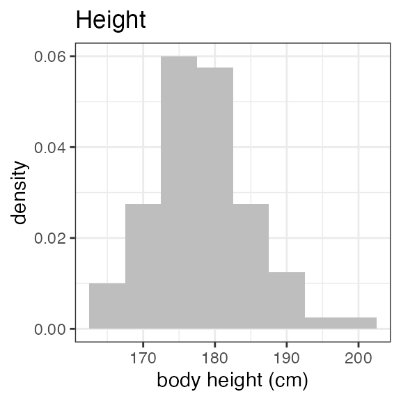
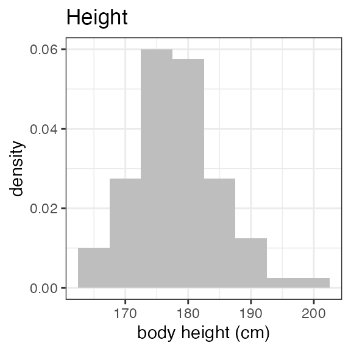
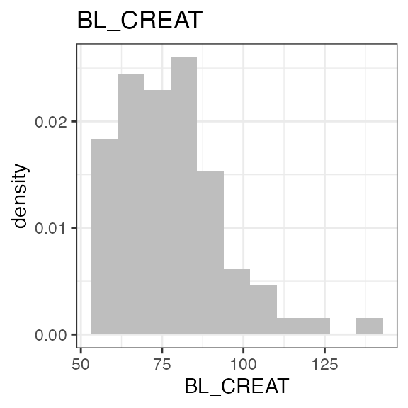
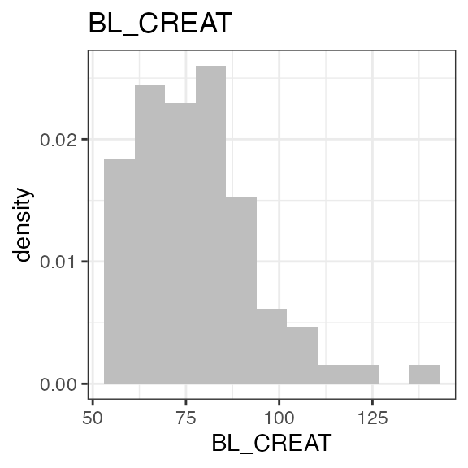
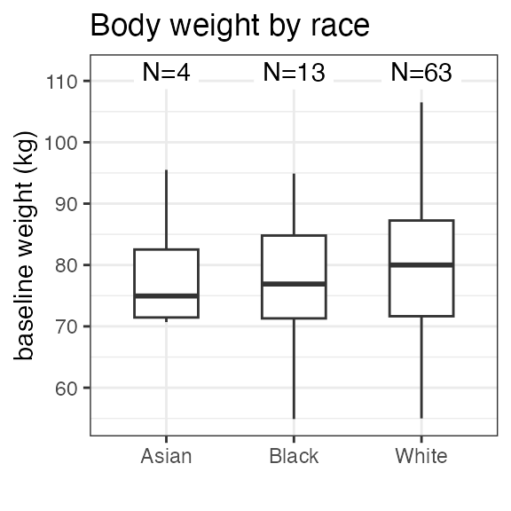
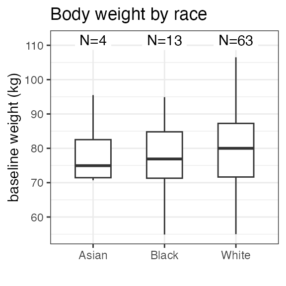

OVERVIEW
This vignette walks through the creation of a NONMEM Input Format (NIF) data set for a multiple dose study (study ‘RS2023-0022’), followed by some basic exploratory analyses.
The fictional SDTM data for this study are included as part of the
NIF package (examplinib_poc). Custom SDTM data can be
loaded using read_sdtm().
Study design
Study ‘RS2023-0022’ is a single-arm study in which subjects received multiple doses of ‘examplinib’ (substance code ‘RS2023’). The treatment duration is different across subjects. PK sampling was on Days 1 and 8 of the treatment period. The PK sampling schedule was rich in the initial subset of subjects and sparse in the others.
Study SDTM data
The package provides the ‘sdtm’ class as a wrapper to keep all SDTM
domain tables of a clinical study together in one object. The
examplinib_poc sdtm object contains the DM, EX, PC and VS
domains. Let’s summarize the examplinib_poc sdtm object for
a high-level overview:
summary(examplinib_poc)
#> -------- SDTM data set summary --------
#> Study 2023000022
#>
#> Data disposition
#> DOMAIN SUBJECTS OBSERVATIONS
#> dm 103 103
#> vs 103 206
#> ex 80 468
#> pc 80 1344
#> lb 103 103
#> pp 13 432
#>
#> Arms (DM):
#> ACTARMCD ACTARM
#> TREATMENT Single Arm Treatment
#> SCRNFAIL Screen Faillure
#>
#> Treatments (EX):
#> EXAMPLINIB
#>
#> PK sample specimens (PC):
#> PLASMA
#>
#> PK analytes (PC):
#> PCTEST PCTESTCD
#> RS2023 RS2023
#> RS2023487A RS2023487ANote that in the EX domain, the administered drug is given as ‘EXAMPLINIB’ while in PC, the corresponding analyte is ‘RS2023’. The other analyte, ‘RS2023487A’ is a metabolite.
NIF DATA SET
Following the tutorial given in
vignette("nif-tutorial"), we start with a basic
pharmacokinetic nif object from examplinic_poc:
sdtm <- examplinib_poc
nif_poc <- new_nif() %>%
add_administration(sdtm, extrt = "EXAMPLINIB", analyte = "RS2023") %>%
add_observation(sdtm, domain = "pc", testcd = "RS2023", analyte = "RS2023", cmt = 2) %>%
add_observation(sdtm, domain = "pc", testcd = "RS2023487A", parent = "RS2023", cmt = 3) Let’s add some further baseline data to our nif object. The serum creatinine concentration can be used to calculate the individual baseline creatinine clearance as an estimate for glomerular filtration rate (eGFR).
We first add baseline creatinine from the ‘LB’ domain using the
generic add_baseline() function. Then, creatinine clearance
is calculated using add_bl_crcl(). That function uses
further covariate data (sex, age, race and weight) and the
Cockcroft-Gault formula by default. For further options, see the
documentation for add_bl_crcl().
nif_poc <- nif_poc %>%
add_baseline(sdtm, domain = "lb", testcd = "CREAT") %>%
add_bl_crcl()
#> baseline_filter for BL_CREAT set to LBBLFL == 'Y'The nif data set now includes both baseline creatinine and baseline creatinine clearance:
head(nif_poc, 3)
# REF ID STUDYID USUBJID AGE SEX RACE HEIGHT WEIGHT BMI
# 1 1 1 2023000022 20230000221010001 58 1 WHITE 185.3 91.4 26.61922
# 2 2 1 2023000022 20230000221010001 58 1 WHITE 185.3 91.4 26.61922
# 3 3 1 2023000022 20230000221010001 58 1 WHITE 185.3 91.4 26.61922
# DTC TIME NTIME TAFD TAD EVID AMT ANALYTE CMT PARENT TRTDY
# 1 2001-01-13 10:36:00 0 0 0 0 1 500 RS2023 1 RS2023 1
# 2 2001-01-13 10:36:00 0 0 0 0 0 0 RS2023 2 RS2023 1
# 3 2001-01-13 10:36:00 0 0 0 0 0 0 RS2023487A 3 RS2023 1
# METABOLITE DOSE MDV ACTARMCD IMPUTATION DV BL_CREAT BL_CRCL
# 1 FALSE 500 1 TREATMENT NA 72.78062 107.4689
# 2 FALSE 500 0 TREATMENT 0 72.78062 107.4689
# 3 FALSE 500 0 TREATMENT 0 72.78062 107.4689EXPLORATION
Demographics
For an initial overview on the distribution of baseline parameters in
the study population, the administered drugs, analytes, observations,
etc., nif objects can be inspected with the summary()
function. After we have added baseline creatinine clearance, the output
also summarizes the number of patients with normal renal function or
impaired renal function:
summary(nif_poc)
# ----- NONMEM Input Format (NIF) data summary -----
# Data from 80 subjects across one study:
# STUDYID N
# 2023000022 80
#
# Sex distribution:
# SEX N percent
# male 47 58.8
# female 33 41.2
#
# Renal impairment class:
# CLASS N percent
# normal 31 38.8
# mild 34 42.5
# moderate 15 18.8
# severe 0 0
#
# Treatments:
# RS2023
#
# Analytes:
# RS2023, RS2023487A
#
# Subjects per dose level:
# RS2023 N
# 500 80
#
# 1344 observations:
# CMT ANALYTE N
# 2 RS2023 672
# 3 RS2023487A 672
#
# Sampling schedule:
# NTIME RS2023 RS2023487A
# 0 X X
# 0.5 X X
# 1 X X
# 1.5 X X
# 2 X X
# 3 X X
# 4 X X
# 6 X X
# 8 X X
# 10 X X
# 12 X X
#
# Subjects with dose reductions
# RS2023
# 25
#
# Treatment duration overview:
# PARENT min max mean median
# RS2023 56 99 78.5 79For a visual overview of the NIF data set plot() can be
applied to the nif summary object. Ignore the
invisible(capture.output()) construct in the below code.
Its purpose is to hide non-graphical output.
invisible(capture.output(
plot(summary(nif_poc))
))
 
 

 


Exposure
In this study, all 80 subject received the same dose level:
nif_poc %>%
dose_levels() %>%
kable(caption="Dose levels")| RS2023 | N |
|---|---|
| 500 | 80 |
However, there were subjects with dose reductions, as we can see when
filtering the nif data set for EVID == 1 (i.e.,
administrations) and summarizing the administered dose:
| DOSE | n |
|---|---|
| 250 | 916 |
| 500 | 5362 |
To identify the subjects with dose reductions, we can use the
dose_red_sbs() function provided by the nif package:
nif_poc %>%
dose_red_sbs()
# # A tibble: 25 × 2
# ID USUBJID
# <dbl> <chr>
# 1 62 20230000221060015
# 2 66 20230000221070005
# 3 44 20230000221050006
# 4 3 20230000221010005
# 5 17 20230000221030004
# 6 76 20230000221070016
# 7 77 20230000221070018
# 8 10 20230000221020007
# 9 22 20230000221030010
# 10 46 20230000221050008
# # ℹ 15 more rowsLet’s have a plot of the doses over time in these subjects:
nif_poc %>%
filter(ID %in% (dose_red_sbs(nif_poc))$ID) %>%
filter(EVID == 1) %>%
ggplot(aes(x = TIME, y = DOSE, color = as.factor(ID))) +
geom_point() +
geom_line() +
theme(legend.position="none") 
We see that dose reductions happened at different times during
treatment. Another way of visualizing this is per the
mean_dose_plot() function:
nif_poc %>%
mean_dose_plot()
The upper panel shows the mean dose over time, and we can see that after ~Day 13, the mean dose across all treated subjects drops due to dose reductions in some subjects. To put this into context, the lower panel shows the number of subjects on treatment over time, and we see that most subjects had treatment durations of around 30 days. Note the fluctuations that indicate single missed doses in individual subjects!
PK sampling
The PK sampling time points in this study were:
nif_poc %>%
filter(EVID == 0) %>%
group_by(NTIME, ANALYTE) %>%
summarize(n = n(), .groups = "drop") %>%
pivot_wider(names_from = "ANALYTE", values_from = "n") %>%
kable(caption = "Observations by time point and analyte")| NTIME | RS2023 | RS2023487A |
|---|---|---|
| 0.0 | 160 | 160 |
| 0.5 | 24 | 24 |
| 1.0 | 24 | 24 |
| 1.5 | 160 | 160 |
| 2.0 | 24 | 24 |
| 3.0 | 24 | 24 |
| 4.0 | 160 | 160 |
| 6.0 | 24 | 24 |
| 8.0 | 24 | 24 |
| 10.0 | 24 | 24 |
| 12.0 | 24 | 24 |
From the different numbers of samplings per nominal time point, we guess that only a subset of subjects had a rich sampling scheme. Let’s identify those:
nif_poc %>%
rich_sampling_sbs(analyte = "RS2023", max_time = 24, n = 6)
# [1] 1 4 5 15 28 29 40 50 51 52 63 64For details, see the documentation to
rich_sampling_sbs().
Plasma concentration data
Let’s plot the individual and mean plasma concentration profiles on Day 1 for the parent, RS2023, and the metabolite, RS2023487A:
temp <- nif_poc %>%
filter(ID %in% (rich_sampling_sbs(nif_poc, analyte = "RS2023", n=4)))
temp %>%
plot(dose = 500, points = TRUE, title = "Rich sampling subjects")
For single and multiple dose administrations separately:
temp <- temp %>%
index_rich_sampling_intervals()
temp %>% filter(RICH_N == 1) %>%
plot(analyte = "RS2023", mean = TRUE, title = "Single-dose PK")
temp %>% filter(RICH_N == 2) %>%
plot(analyte = "RS2023", title = "Multiple-dose PK", time = "NTIME", mean = T)
The above code made use of the helper function
index_rich_sampling_intervals() that identifies dosing
intervals with rich PK sampling. See the documentation for details.
Non-compartmental analysis
The nif package includes functions for non-compartmental PK analysis.
Essentially, nca() is a wrapper around
PKNCA::pk.nca() from the popular PKNCA
package.
nca <- examplinib_poc_nif %>%
index_rich_sampling_intervals(analyte = "RS2023", min_n = 4) %>%
nca("RS2023", group = "RICH_N")
nca %>%
nca_summary_table(group = "RICH_N") %>%
kable()| RICH_N | DOSE | n | aucinf.obs | auclast | cmax | half.life | tmax |
|---|---|---|---|---|---|---|---|
| 1 | 250 | 4 | 16962.71 (18) | 15764.51 (19) | 3050.03 (23) | 2.82 (10) | 2.37 (2; 2.67) |
| 1 | 500 | 12 | 21147.25 (37) | 19382.1 (37) | 3530.09 (37) | 3 (14) | 2.53 (2; 2.78) |
| 2 | 250 | 4 | NA | NA | 3051.88 (24) | 2.85 (6) | 2.07 (1.7; 2.75) |
| 2 | 500 | 12 | NA | NA | 3559.39 (36) | 3.05 (12) | 2.51 (1.68; 3.03) |